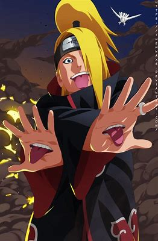
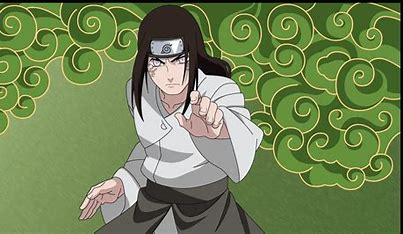
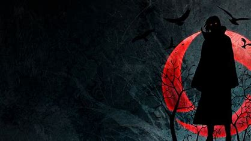

Deidara
Deidara (デイダラ) was an S-rank missing-nin from Iwagakure. During his time in the village, he was a member of the Explosion Corps. After defecting from the village, he was forced into Akatsuki and was its youngest member. There, Deidara was partnered with Sasori until the latter's death, and later with Tobi before his own death
Negi
Though a prodigy even by the Hyūga's standards, Neji was a member of the clan's branch house; no matter how skilled he became, he would always be in service to the Hyūga's main house, a fact that convinced him fate was predetermined. After experiencing Naruto Uzumaki's refusal to be limited by such an ideology, Neji realised his fate was what he chose it to be, and as a member of Team Guy he sought the strength necessary to make the future he wanted for his family and friends.
Naruto

Naruto Uzumaki (Japanese: うずまき ナルト, Hepburn: Uzumaki Naruto) is the titular protagonist of the manga Naruto, created by Masashi Kishimoto. He is a ninja from the fictional Hidden Leaf Village (Japanese:, Hepburn: konohagakure). As a boy, Naruto is ridiculed and ostracized on account of the Nine-Tailed Demon Fox—a malevolent creature that attacked Konohagakure—that was sealed away in his body.
itachi
Itachi Uchiha (うちはイタチ, Uchiha Itachi) was a shinobi of Konohagakure's Uchiha clan who served as an Anbu Captain. He later became an international criminal after murdering his entire clan, sparing only his younger brother, Sasuke. He afterwards joined the international criminal organisation known as Akatsuki, whose activity brought him into frequent conflict with Konoha and its ninja — including Sasuke who sought to avenge their clan by killing Itachi. Following his death, Itachi's motives were revealed to be more complicated than they seemed and that his actions were only ever in the interest of his brother and village, making him remain a loyal shinobi of Konohagakure to the very end